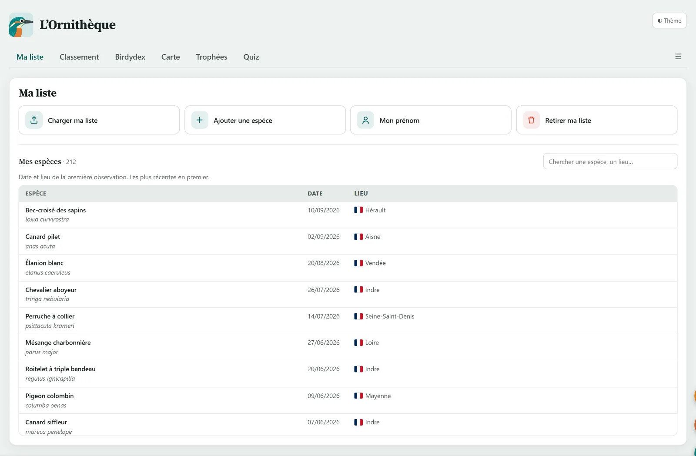
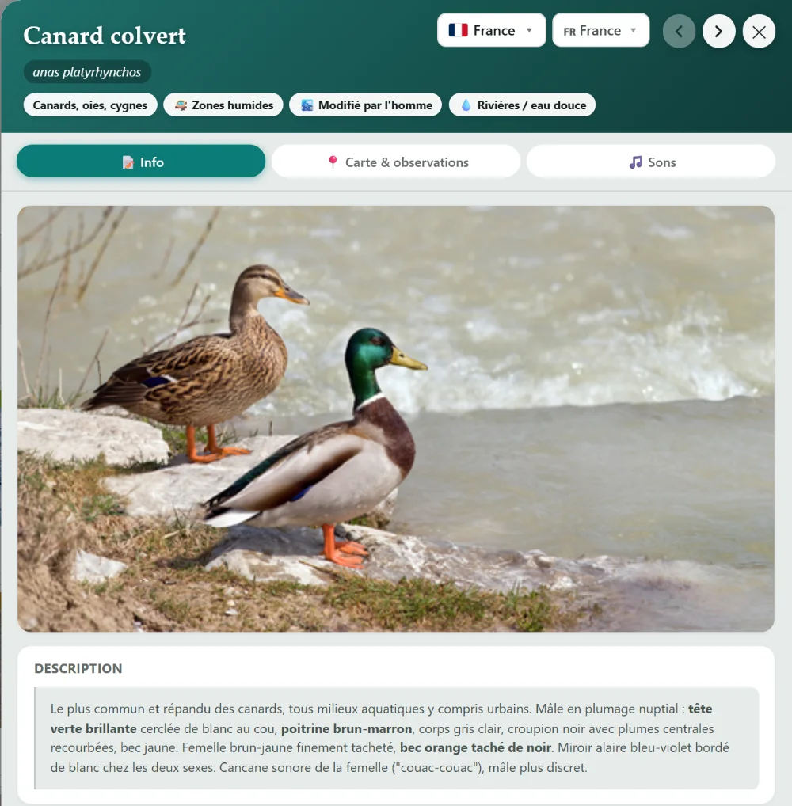
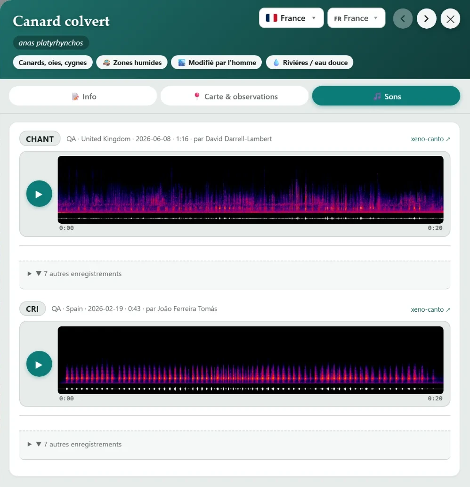
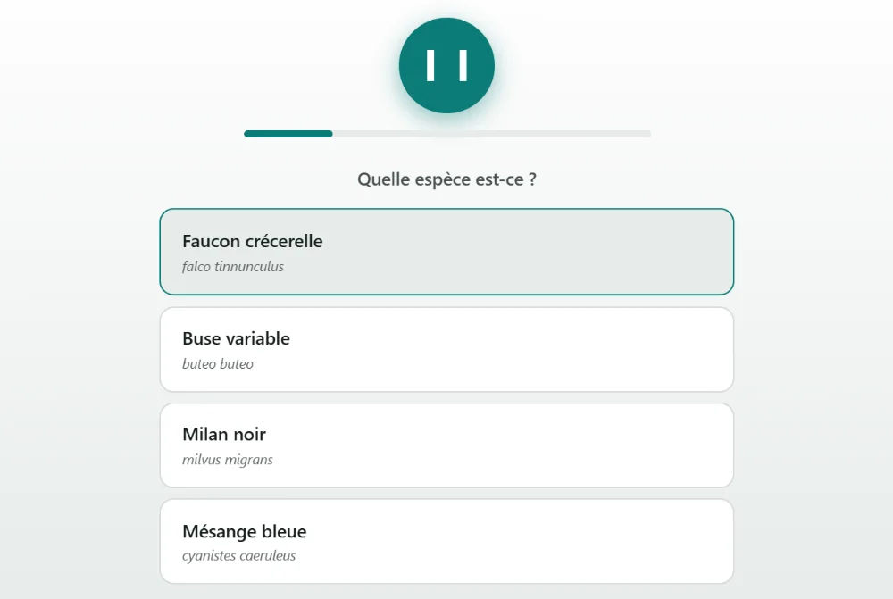
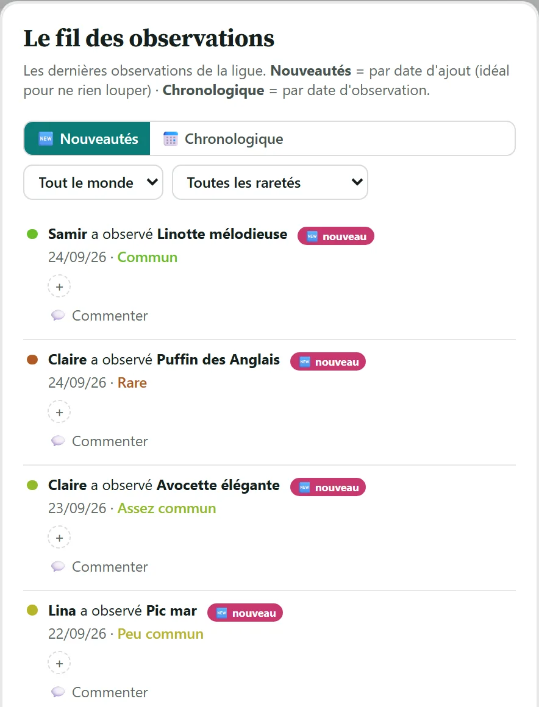
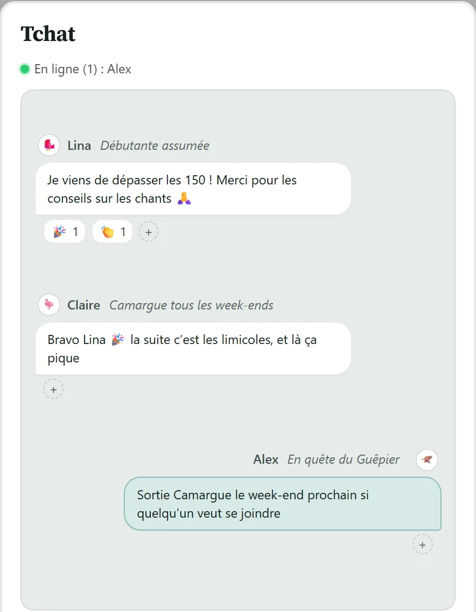
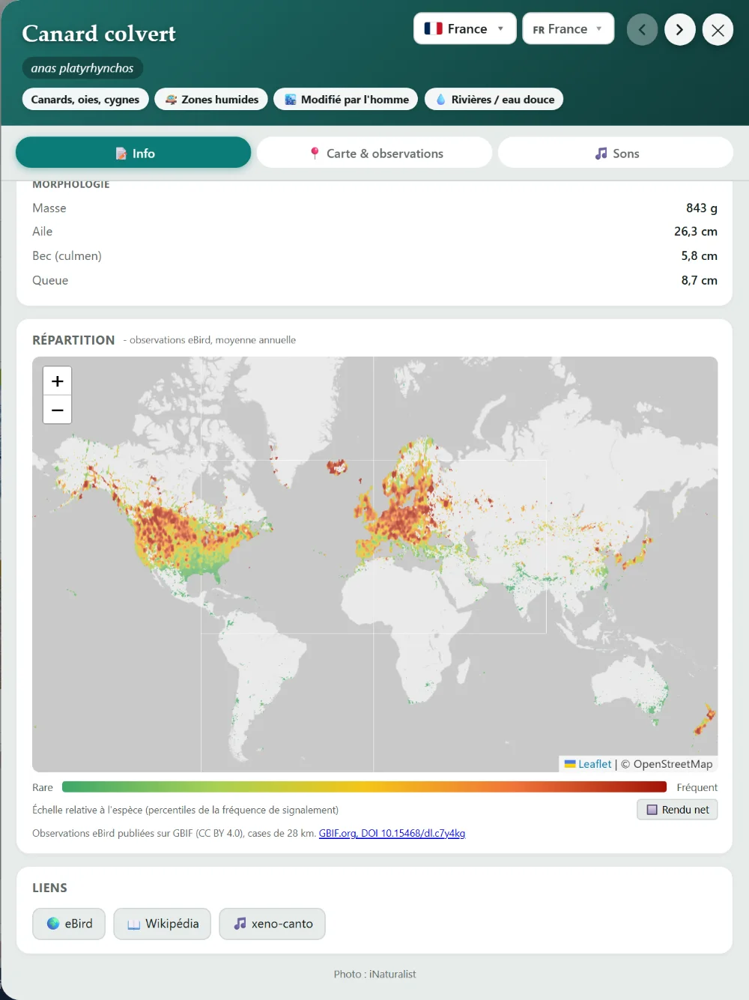
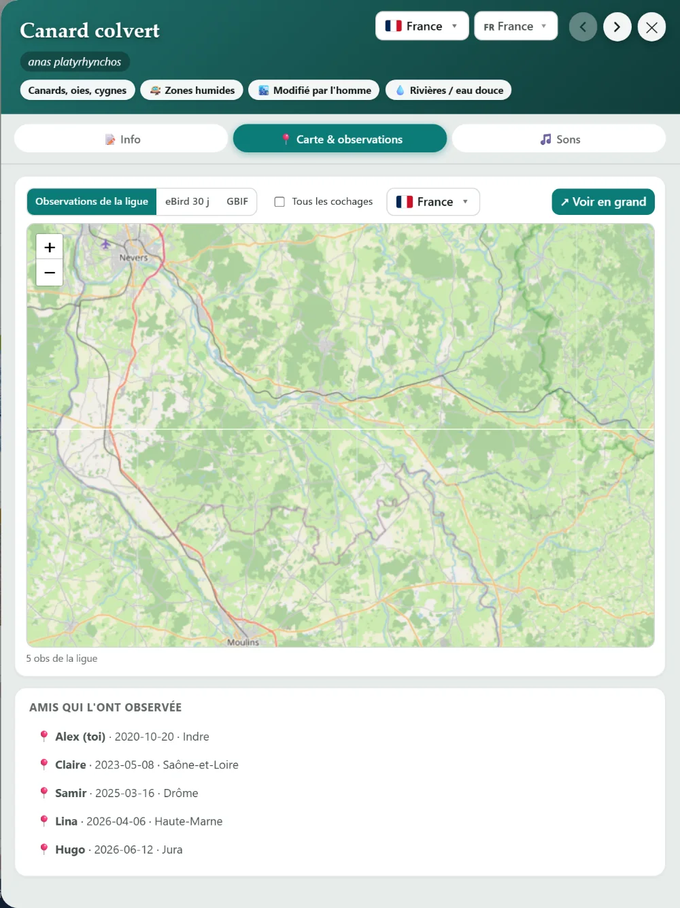

L’Ornithèque
Projet personnel · 2026
Un site pour suivre ses observations d’oiseaux entre amis. Chacun y retrouve les espèces qu’il a vues, voit où vit chaque oiseau, apprend à le reconnaître à son chant, prépare ses sorties et suit ce que voient les autres. Il y a aussi un classement, pour se comparer, mais ce n’est pas le but principal du site. Il est en service, utilisé par un vrai groupe.
Démonstration publique, sans compte, sur des données inventées. Le site réel est privé.
Ce qu’on y fait
Mon rôle
J’ai défini à quoi sert le site et ce qu’il montre, choisi les sources de données, fixé les règles du classement et des trophées, et décidé de l’accès, fermé par invitation. Le développement, qui n’est pas mon métier, a été piloté avec un assistant IA (Claude Code) : je décide, je vérifie moi-même sur le site, et je demande une preuve chiffrée avant de considérer qu’une chose marche.
Suivre ses observations
Chacun dépose la liste des espèces qu’il a vues, exportée d’eBird. Le site en garde, pour chaque espèce, la date et le lieu de la première observation.

Pleine résolution ↗
En apprendre plus, apprendre à les reconnaître
Chaque espèce a sa fiche : description, milieux de vie, mensurations, carte de répartition et chants. Le Birdydex range toutes les espèces d’un pays par famille, et le quiz fait deviner une espèce à son chant.

Pleine résolution ↗

Pleine résolution ↗

Pleine résolution ↗

Pleine résolution ↗
Partager ses observations, préparer une sortie
Le fil annonce au groupe chaque nouvelle espèce vue par l’un des membres, et chacun peut y réagir ou commenter. Pour préparer une sortie, la carte montre ce qui a été observé ces derniers jours dans une zone tracée à main levée, et le tchat sert à s’organiser.

Pleine résolution ↗

Pleine résolution ↗
Les cartes et les données

Pleine résolution ↗
D’où viennent les données
eBird donne la fréquence de chaque espèce par zone et par période, GBIF les observations mondiales, xeno-canto les enregistrements de chants, AVONET les traits des espèces et BIRDBASE leurs milieux de vie. Des dizaines de programmes de collecte et de calcul fabriquent les fichiers que le site publie. La rareté de chaque espèce est notée de 0 à 10 selon sa fréquence réelle dans la zone choisie.
Refaire les cartes soi-même
Les cartes de répartition venaient d’abord des modèles Status & Trends de Cornell. En lisant leurs conditions d’utilisation, j’ai vu qu’elles ne peuvent pas être publiées sur un site sans accord écrit. Je les ai donc fait reconstruire, avec l’assistant IA, à partir des observations eBird brutes, que Cornell publie sur GBIF sous licence libre : 1,48 milliard d’observations depuis 2015, comptées par espèce, par mois et par case de 0,25°, soit 28 km. Un premier essai par les cartes toutes faites de GBIF donnait des cases de 155 km, trop grosses : il a fallu passer par un téléchargement en SQL. Pour ne pas cartographier les observateurs à la place des oiseaux, chaque case donne une fréquence de signalement, les observations de l’espèce divisées par toutes les observations d’oiseaux de la case. Résultat : 10 660 espèces cartographiées en fréquence de signalement, animées sur douze mois, et 236 autres, absentes des données eBird publiées, en simple présence tirée d’autres sources de GBIF. Stockées en grilles de gris que le navigateur colore et projette, elles pèsent 82,7 Mo, au lieu de 2,7 Go en images couleur.

Pleine résolution ↗

Pleine résolution ↗
Un exemple de rigueur
L’année en cours est toujours incomplète : janvier à septembre portent huit années de données, octobre à décembre sept. Sans correction, le début d’année pèse trop. La correction retenue pondère par le nombre de listes par an, et elle a été validée par un test à blanc : on retire exprès une année complète et on compare à la vérité connue. Erreur médiane pour la France : 2,12 % avec la correction, 3,07 % sans, 4,09 % en jetant l’année incomplète.
Mesurer plutôt que regarder
Les tests automatiques
Onze tests automatiques rejouent le vrai site dans un navigateur et rendent un verdict. Ils ont attrapé des défauts qu’aucun œil n’avait vus, dont quatre erreurs déjà en production. Le démarrage a été mesuré puis allégé : 14 737 Ko de photos lus à l’ouverture, ramenés à 212 Ko.
Accès et droits
L’accès est fermé par un code d’invitation à usage unique depuis le 28 septembre, après un audit des règles de sécurité. Chaque source est citée selon sa licence, jusqu’aux références des deux téléchargements GBIF qui ont servi aux cartes.
Ce qui reste imparfait
Les limites connues
Les règles de sécurité sont relues à la main, pas testées automatiquement. Les cartes comptent des observations, sans le modèle statistique de Cornell : là où l’on observe peu, en Afrique ou en Sibérie, elles restent clairsemées. L’accessibilité a eu une première passe mesurée, pas d’audit extérieur.
Outils et sources
Outils
Sources
Observations : eBird, base de données en ligne sur la répartition et l’abondance des oiseaux, Cornell Lab of Ornithology, Ithaca, New York (ebird.org) ; observations eBird publiées sur GBIF, licence CC BY 4.0, téléchargements 10.15468/dl.c7y4kg et 10.15468/dl.rb9sut. Chants : xeno-canto. Traits des espèces : AVONET (Tobias et al., 2022). Milieux de vie : BIRDBASE.
Envie d’en savoir plus ?
Le site réel est privé : il contient les listes d’un groupe d’amis. La démonstration publique est en haut de cette page.